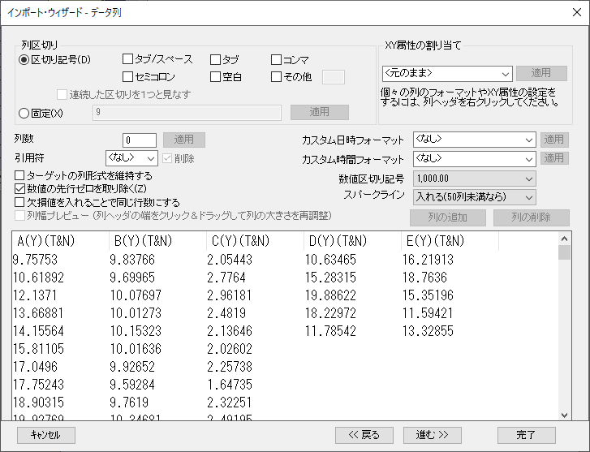
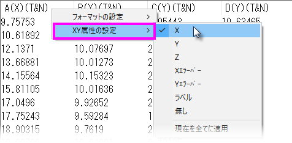

インポートウィザード、データ列ページ (ASCII)
ImpWiz-ASC-DataColsPage
このページのオプションを使って、データ区切りとその他の設定(例えば、列のXY属性、カスタム日時フォーマット、数値区切りなど)を行います。
- 
列区切り
| 「区切り記号」ラジオボタン
|
区切り記号ラジオボタンにチェックが付いている場合、Originは指定した区切り記号で列を分けます。カスタム区切りを指定するには、その他を選択し、隣のテキストボックスに区切り記号を入力します。その他の編集ボックスは1文字のみをサポートしています。
|
| 連続した区切り記号を1つと見なす
|
このチェックボックスが選択されていると、連続した区切り記号を1つの区切り文字のように扱います。
|
| 「固定」ラジオボタン
|
列が固定幅の場合、固定ラジオボタンを選択します。そして、ラジオボタンの隣のテキストボックスに幅を入力します。
|
/Tip_icon.png) | 固定が使われる場合、列数は0 (ゼロ)にセットされ、固定に入力された最後の数字が、すべての列がインポートされるまで、繰り返し使用されます。例えば、固定に 6,5,13 、列数 に 0 とセットし、最初の列が6の幅、2番目が5の幅、3番目以降すべての列がインポートされるまで13 の幅が使われます。最後の列の値だけではなく、パターンを繰り返すには、このパターンを括弧で囲みます。例えば、固定 に 5,6,(2,13) 、列数に 0 と入力されていると、列の右方の列幅は、すべての列がインポートされるまで、 2 と 13 の幅が繰り返し使われます。
|
| Note: Origin 8.6ではタブ/スペースを区切り記号としてサポートしています。これはタブ または スペースとは異なります。 タブ/スペースは、1つまたは複数のタブ(スペース)を区切り記号として見なします。
例えば、2つの値の間に2つのスペースがある場合があります。区切り記号としてスペースを選択すると、このデータをインポートしたとき、2つのスペースは2つの区切り記号と認識され、3つのセルがインポートされることになります。区切り記号としてタブ/スペースを選択すると、 2つの連続したスペースを空白、つまり1つの区切り記号と考え、2つのセルがインポートされます。 タブ/スペースを区切り記号として選択すると、他の区切り記号は利用できません。
|
列のXY属性
このオプションは、すべてのデータ列のXY属性を設定するのに使用します。ドロップダウンリストから選択、または直接XY属性を入力して適用ボタンをクリックすると、データファイルの列に選択したパターンを適用します。
また、列ヘッダを右クリックして、コンテキストメニューからフォーマットの設定または列XY属性の設定を選び、列フォーマットや個別の列のプロット属性をセットできます。 フォーマットおよびXY属性の設定は、データインポートのターゲットワークシート列に適用されます。
- 
その他のオプション
| 列数
|
ファイルインポートでのターゲットワークシートに作成される列の数を指定します。すべての列をインポートする場合には、 0 を入力します。
区切り記号が選択された場合(列区切りコントロール)、列数には、設定した区切り記号(タブ、カンマ、スペースなど)を基にOriginが見つけた値が入力されます。
「固定」が選択されている場合、列数は固定幅の値を使って計算されます。 値を入力して、適用をクリックすればこの値を書き換えることができます。 列数の値が、計算された固定の値を越える場合、指定された最後の幅が繰り返されます。 下側の表示パネルは、適用をクリックすると更新されに、入力されている値を表示します。
|
| カスタム日時フォーマット
|
ドロップダウンリストから日時フォーマットを選択、またはカスタム日時フォーマット文字列に入力し、適用をクリックします。
詳細は、 カスタム日時フォーマットページをご覧下さい。
|
| カスタム時間フォーマット
|
ドロップダウンリストから時間フォーマットを選択、またはカスタム時間フォーマット文字列に入力し、適用をクリックします。
詳細は、 カスタム日時フォーマットページをご覧下さい。
|
| 引用符付きテキスト
|
元のテキストファイルの値を囲む記号を選択します。 1組の引用符で囲まれたテキストは、区切り文字を含んでいても、1つの値として見なされます。削除チェックボックスを使って、「引用符」の記号を削除するかどうかを指定します。
|
| 数値区切り記号
|
ドロップダウンリストから数値区切り記号を選択します。
|
| 数字の先行ゼロを取り除く
|
インポートするデータの先頭の0を削除する場合、このオプションにチェックを付けます。例えば0050は50となります。
|
| スパークラインの追加
|
このドロップダウンリストを使って、ターゲットワークシートにスパークラインを追加するかどうかを指定します。
|
| 欠損値を入れることで同じ行数にする
|
このチェックボックスを選択すると、各行の大きさを同じするために、欠損値が列の最後に追加されるようになります。
|
| ターゲットの列フォーマットを保持する
|
このチェックボックスを使って、ターゲット列フォーマットを維持するかどうかを指定します。 このチェックボックスが選択されていると、プレビューウィンドウの列ヘッダを右クリックして現れる「」ショートカットメニューは動作しません。
|
| 列幅プレビュー
|
このオプションは、「固定」ラジオボタンと一緒に動作します。これを使って、固定幅のデータファイル(区切りなし)の列幅のパターンを指定できます。選択すると、表示は列幅プレビューモードに変わります。このモードでは、表示の列をドラッグして列幅を調整することができます。 このオプションの隣にある列の追加または列の削除ボタンを使って列を追加したり、削除することができます。個々の列幅をドラッグして変更すると、固定ラジオボタンの隣のテキストボックスが更新され、カンマ区切りの列幅のリストを表示します。列幅を設定すれば、このチェックボックスのチェックを外して、ターゲットワークシートで現れるようにデータ列を表示することができます。
|
プレビューウィンドウ
構造定義が完了すると、指定した構造に基づいて、プレビューウィンドウに結果のワークシートに表示されるようにインポートしたデータを表示します。 プレビューウィンドウの列ヘッダを右クリックして、ターゲットワークシートの列のXY属性やフォーマットをセットすることができます。